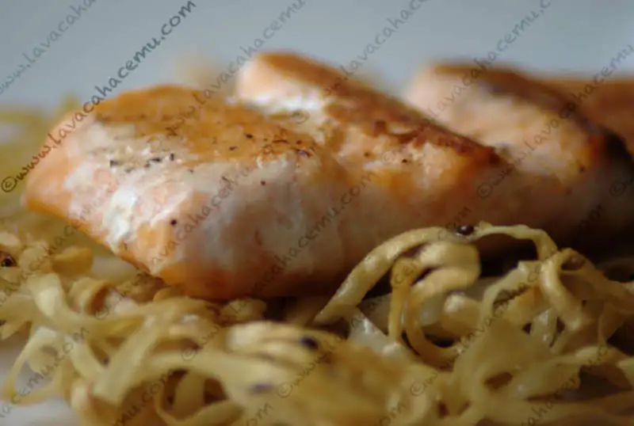
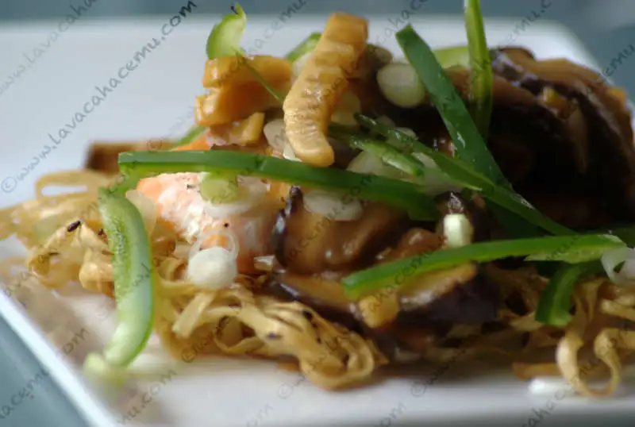

Salmón Mein Chow

{kind=link}

{kind=link}
Una receta un larga y complicada, no muy como para la comida de entre-semana, pero perfecta para un fin de semana cuando tienes un poco mas de tiempo, esta receta de libro asiático de williams sonoma tiene muy buenos elementos de sabores con lo ácido/amargo del bambú con el pescado y los fideos fritos, además, el juego de texturas lo hace aún más interesante (y rico)
Ingredientes
Para los fideos
- 1 / 2 libra (250 g) de fideos de huevo chino.
- 1 cucharada de aceite de ajonjolí asiático.
- 3 / 4 cucharadita de sal.
- 1 / 4 taza de cebollitas verdes en rodajas diagonales.
- 1 / 2 cucharadita de semillas de ajonjolí tostado.
- 4-5 cucharada de aceite de canola o de maní.
Para el pescado
- 4 lubina o salmón en filetes, ~6 oz (185 g) cada uno
- 1/2 cucharadita de sal.
- 1/4 cucharadita de pimienta blanca.
- 3 cucharadas de aceite de canola o de cacahuate.
- 1/3 taza de caldo de pollo bajo en sodio.
- 1 cucharada de salsa de soya y vinagre negro.
- 1 cucharadita de vino de arroz chino y aceite de ajonjolí asiático.
- 1/2 cucharadita de salsa Sriracha.
- 1 cucharadita de azúcar.
- 1/2 cucharadita de maicena.
- 2 cebollitas verdes, picada.
- 1 cucharada de jengibre picado fresco, pelado y jalapeño verde picado sin semillas.
- 2 dientes de ajo picados.
- 1 taza del tallo de hongo shitake, cortado en juliana.
- 1/4 taza de brotes de bambú cortado en juliana.
Para la guarnición
- 2 cebollitas verdes, cortada en rodajas finas en diagonal.
- 1 chile jalapeño rojo, sin semillas y cortado en juliana.
Preparación:
- Precaliente el horno a 400 F
- Para hacer la pasta, poner en una olla grande las tres cuartas partes de agua a hervir. separar la pasta con los dedos, añadirlos al agua hirviendo, y dejar hervir hasta que esté tierno, 2-3 minutos. Escurra y enjuague con agua fría y escurrir de nuevo. En un tazón grande, mezcle la pasta con el aceite de ajonjolí, sal, cebolla verde y semillas de ajonjolí. Use sus dedos para distribuir uniformemente el aderezo y separar las hebras.
Procedimiento
- En una sartén antiadherente de 10 pulgadas, poner a fuego medio-alto, 2-3 cucharadas de aceite de canola. Hacer una bola con los fideos y aplastarlos con un plato pequeño. Cocine hasta que estén dorados en la parte inferior, 7-10 minutos, Procura que no se quemen los fideos. Pon 2 cucharadas de aceite de canola en los fideos. Cocina hasta que el segundo lado esté dorado, 7-10 minutos. Transferir los fideos a una bandeja para horno cubierta con toallas de papel para escurrir.
- Mientras tanto, cocer el pescado con sal y pimienta blanca. en una sartén grande a fuego alto, caliente 1 cucharada de aceite de canola. Añadir los filetes en una sola capa y cocine, volteando una vez, hasta que estén dorados por ambos lados, 2-3 minutos por cada lado.
- Traslada los filetes a una bandeja para hornear y coloque en el horno durante 5 minutos para los filetes de 1 pulgada (2,5 cm) de espesor y 10 minutos para los filetes de 2 pulgadas (5 cm) de espesor.
- En un tazón pequeño, mezcle el caldo, la salsa de soya, vinagre, vino de arroz, aceite de ajonjolí, salsa de Chile, el azúcar y la maicena, para hacer una salsa.
- En el sartén utilizado para el pescado agregue la cebolla verde, jengibre, Chile picado y el ajo y sofría hasta que estén fragantes, unos 2 minutos. Añadir los hongos y brotes de bambú y continuar salteando hasta que los hongos comiencen a marchitarse, unos 2 minutos. Revuelva en la salsa, poner la mezcla a hervir, y luego reducir rápidamente el calor. Cocine a fuego lento hasta que la salsa se espese, 2-3 minutos. retirar del fuego. Coloque la pasta en una tabla de cortar y cortar en 4 partes. Pon los fideos en un plato extendido y poner encima los filetes de pescado. Vierta la salsa sobre los filetes. Adorne con la cebolla verde y chile en juliana y servir.